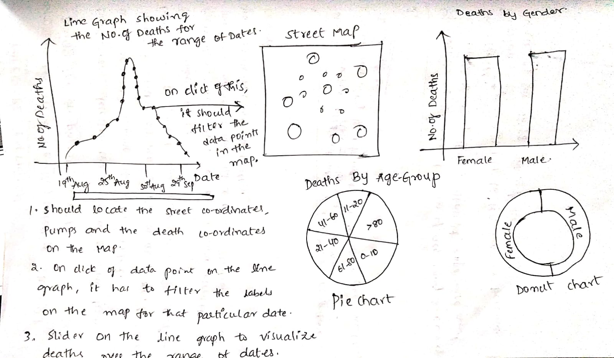
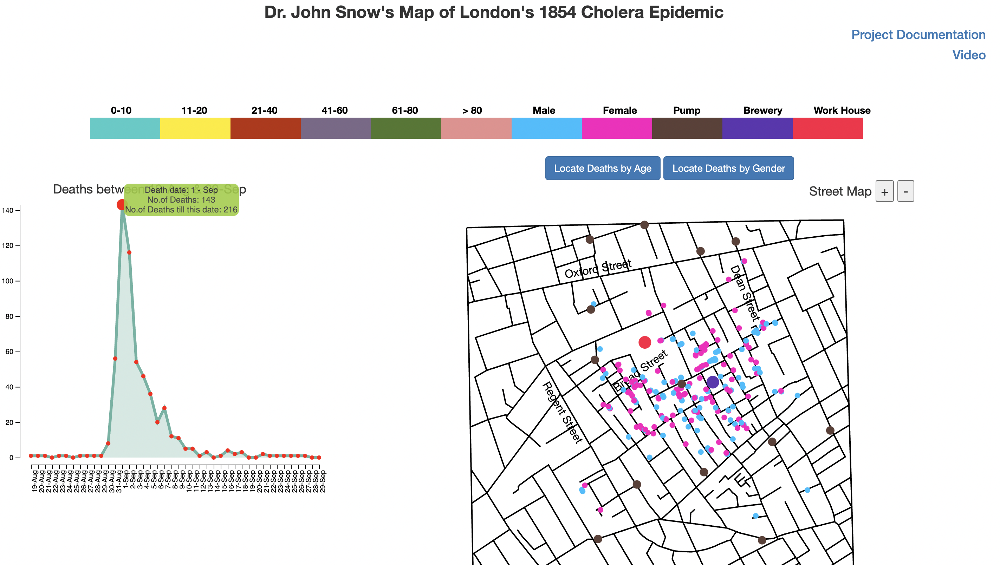
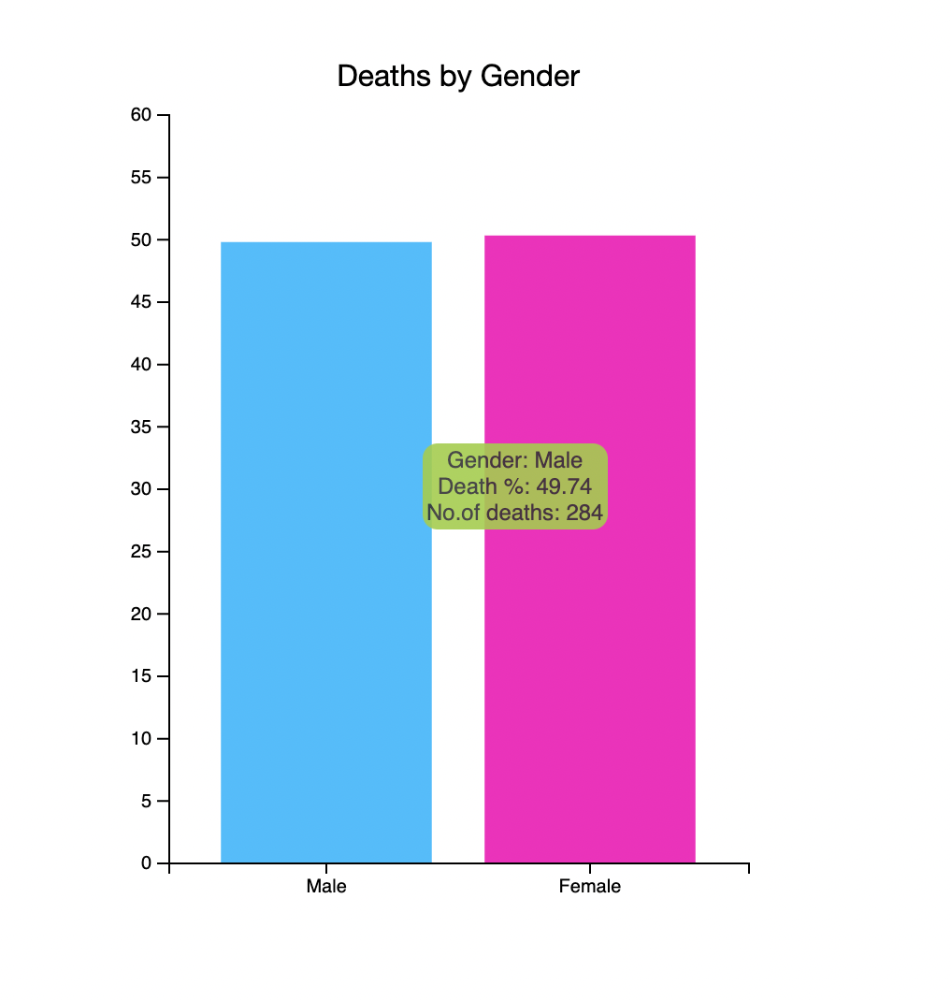
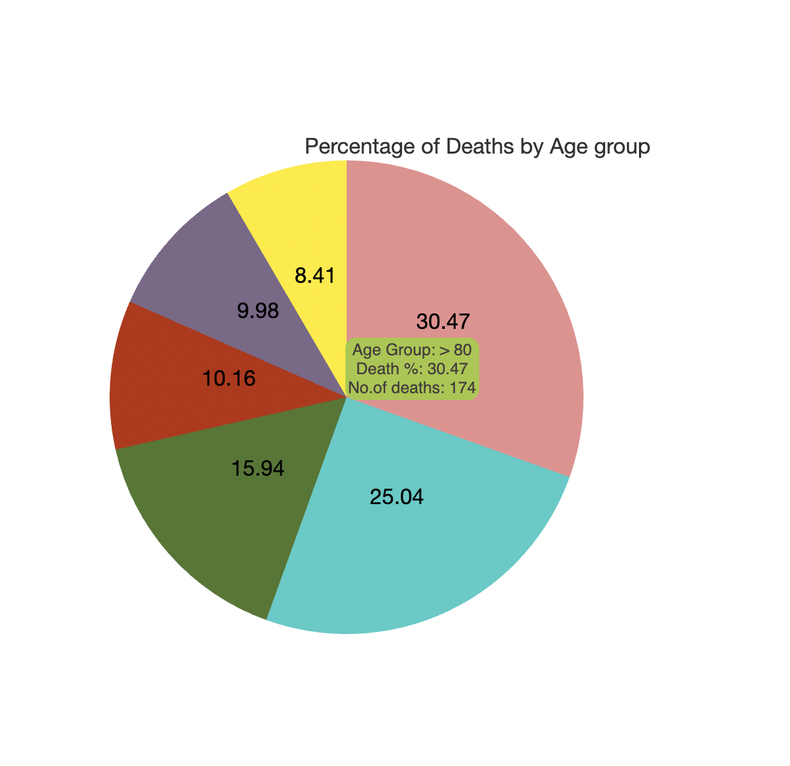

Dr. John Snow made the first graphic to locate the origins of the Cholera outbreak in London in 1854. He had done a survey and utilized the survey data to create a map, which let him spot a pattern that no one else had seen before, and he was able to pinpoint the root of the outbreak.
The objective of this project is to recreate Dr. John Snow’s map in an interactive version using D3. So, that it helps people like John snow to conduct an investigation.
First, I made a list of the use cases that needs to be created.
Following that, I hand sketched a couple of visuals that would be appropriate for the use cases and then I attempted to use D3 to implement these.
I chose colors that are clearly distinct so that colorblind persons will be able to discern the graphics easily.
Following that, I attempted to arrange the graphics in such a way that the most important visuals are visible at the top of the page.
Post that, I have tried to enhance these visualizations by adding features like:
(i) Zoom in and Zoom out to the street map
(ii) Added tool tip for all the visuals. So, on hover we can find the related information in the tooltip.
(iii) Gave the legend on the top so, that it would be easy to understand the visuals.
The visuals that I brainstormed before starting the project are shown here.
D3
Html
CSS
Java Script
JQuery
The developed visualizations, answered several questions related to Cholera outbreak.
For example, from the line graph, we can clearly identify the date which has highest number of deaths.
When we hover on that particular data point on the graph, we can locate all the deaths on the map prior to that particular day.
On the map, we can see the gender wise distribution of deaths.
One more use case that I have developed is a bar graph that shows the total number and the percentage of deaths by gender.
The other use case is to show the distribution of deaths according to the age groups. To serve this, I have created a pie chart visualization that shows the total number of deaths and the percentage of deaths by age group.
https://www.d3-graph-gallery.com/graph/area_lineDot.html
https://www.tutorialsteacher.com/d3js/create-pie-chart-using-d3js
https://www.d3-graph-gallery.com/graph/barplot_basic.html
https://learn.arcgis.com/en/projects/map-a-historic-cholera-outbreak/#:~:text=In%201854%2C%20Dr.,the%20source%20of%20the%20outbreak.